Case Study
KLYMB
A fitness and lifestyle app built around one daily score. I was the founding product designer, shaping the product and building its design system from scratch.


Thinking beyond the screen
Some of the most useful work I did here wasn't a polished screen — it was noticing what the product needed and raising it early.
A problem I raised
Five full screens stood between a new user and the app.
What I did
I flagged it to the founders as a retention risk, not a polish issue — five screens is a lot to sit through before you've even opened the app.
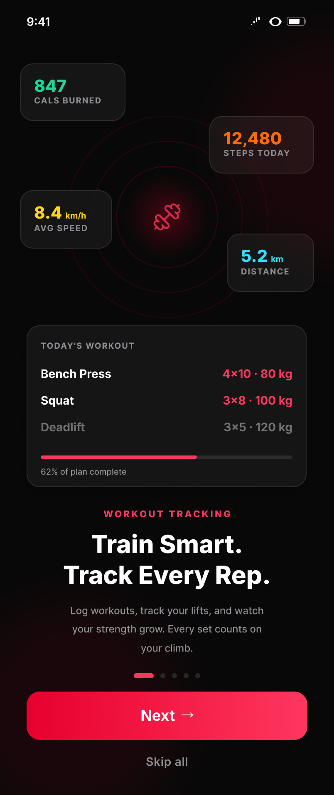
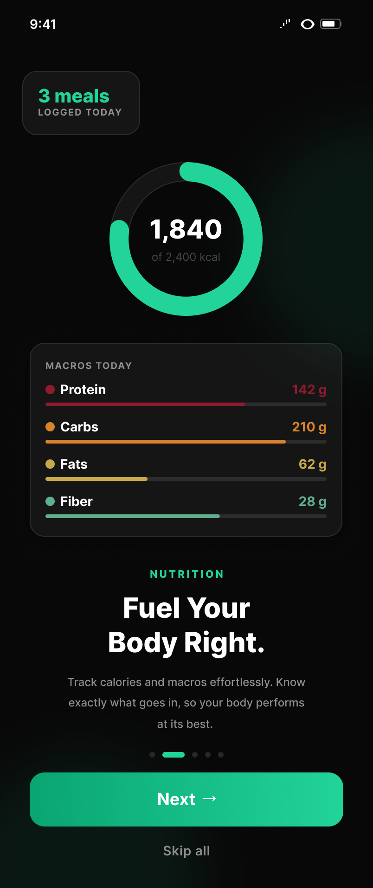
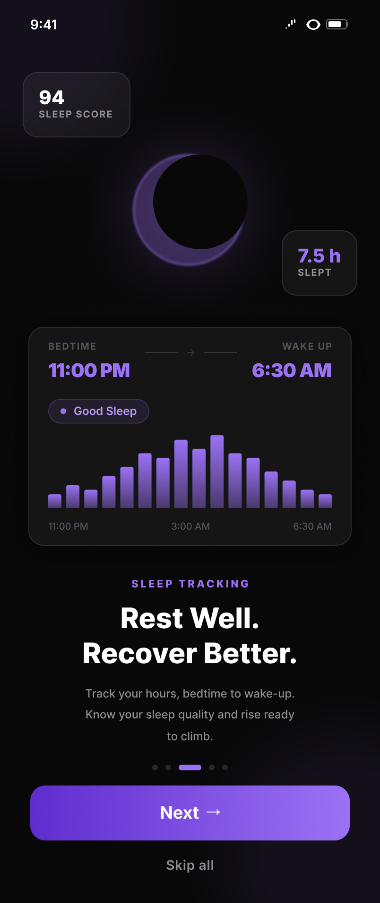
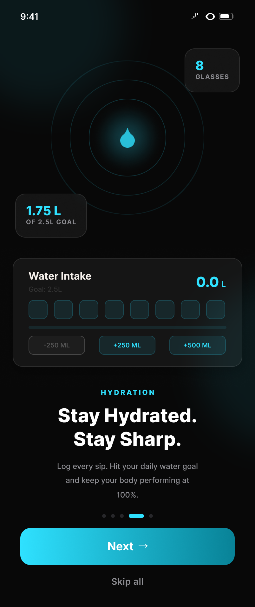

Product evolution
We didn't get the core score's name right the first time.
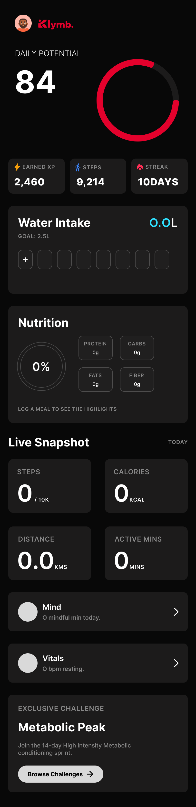
“Daily Potential” made it sound like something you hadn't earned yet. “Lifestyle Score” reads as the whole day, good or bad. Small change, but it shifted how the entire screen felt.
An idea I proposed
Turning the logo into a mascot.
In a founder discussion I suggested turning the logo's climbing figure into a full character — something with personality outside the app, for share cards and social. It landed well, but we parked it until after the MVP. Not final artwork, just an idea I threw out there.
The experience, up close
Home and the tracker are where people spend most of their time in the app. Here they are in full — not cropped down to fit a layout.
Home
Tracker
Nutrition
Two ways to log a meal, one default
Scanning a barcode fills in the nutrition instantly — no typing, no searching. If there's no barcode, you can search or log a meal by hand instead. I made scanning the default because the less friction there is, the more likely people actually keep the habit up.


One pattern, every category
As the product grew, I leaned on one shared set of components instead of custom-building each screen — nutrition, hydration, sleep, whatever came next just reused the same card.
Forms & selection
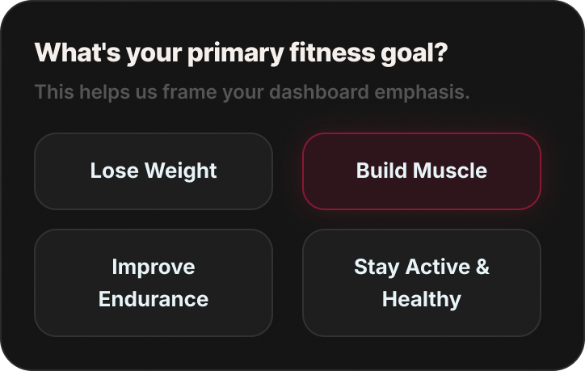
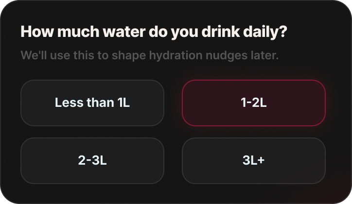
Navigation · one bar, every state
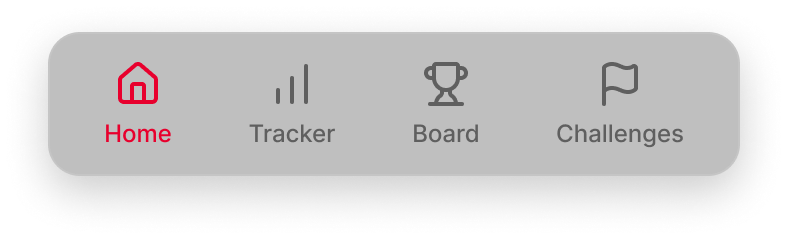
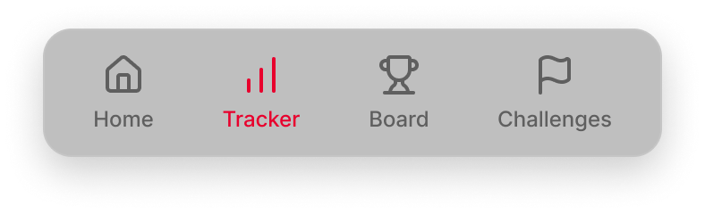
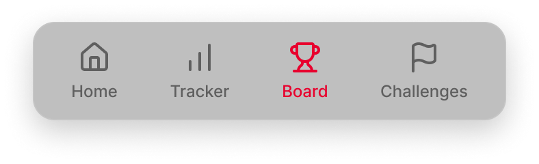
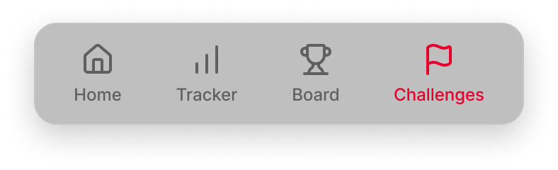
Weekly charts · one chart, every metric
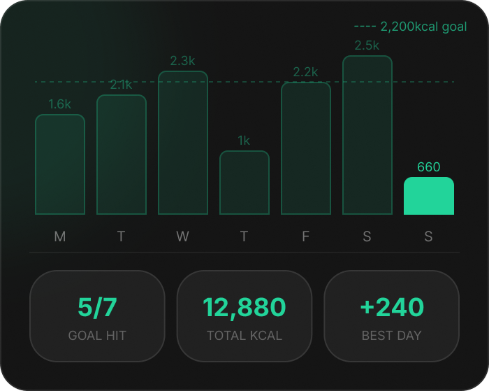
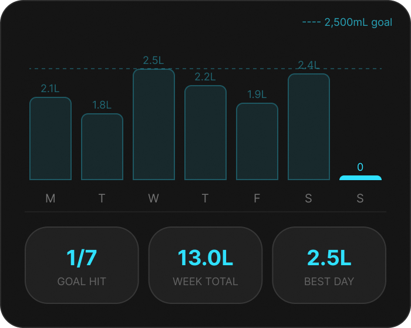
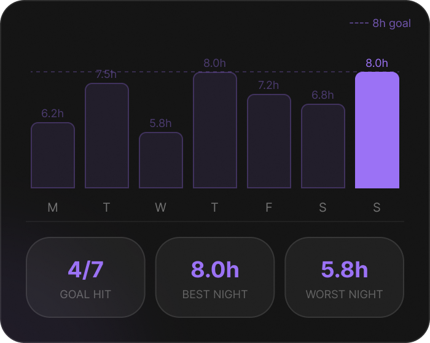
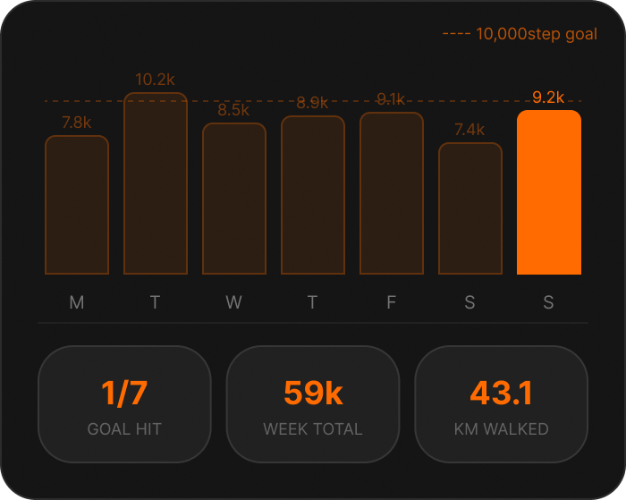
Metric cards · one card, every category
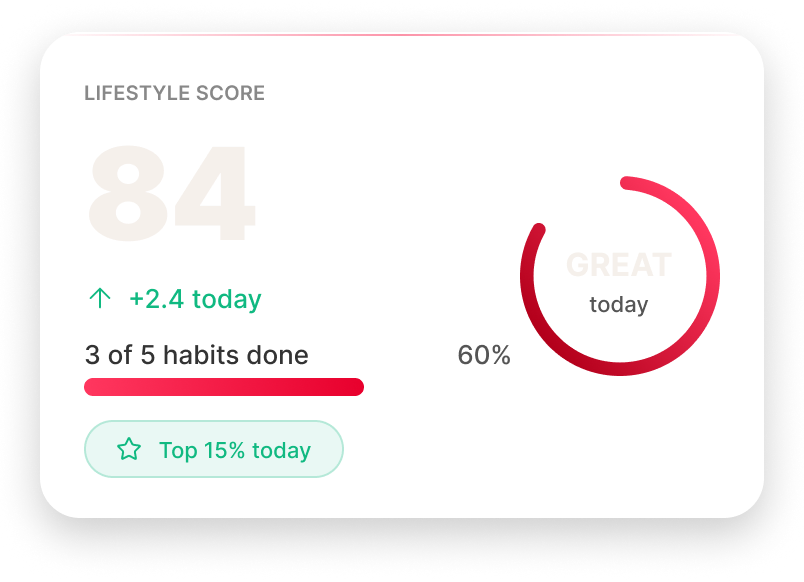
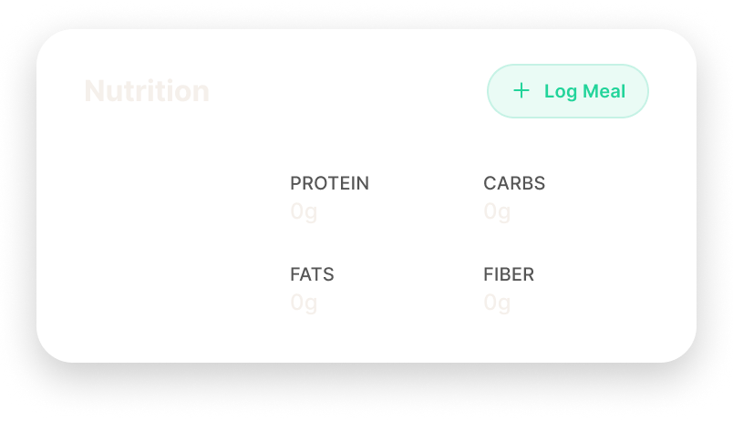
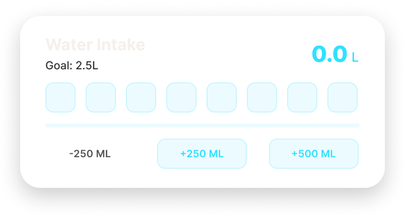
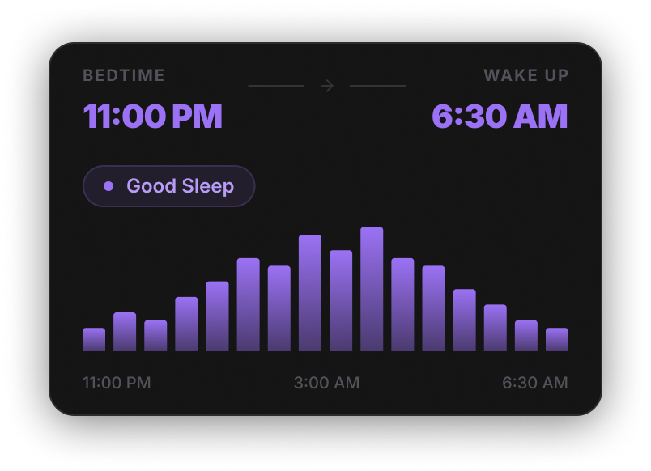
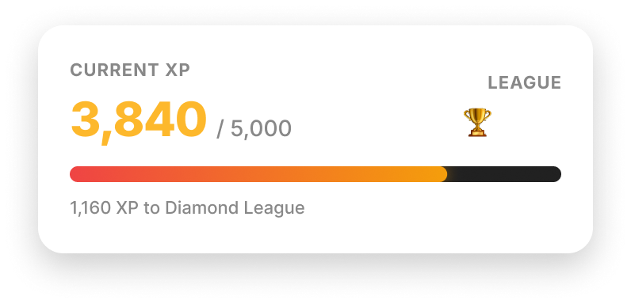
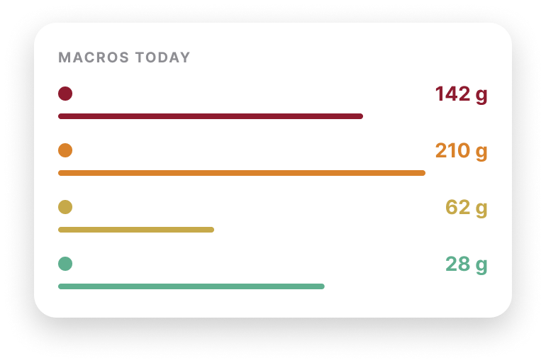
A custom icon set
Every icon here is one I drew myself — same stroke weight, same geometry, same style throughout.
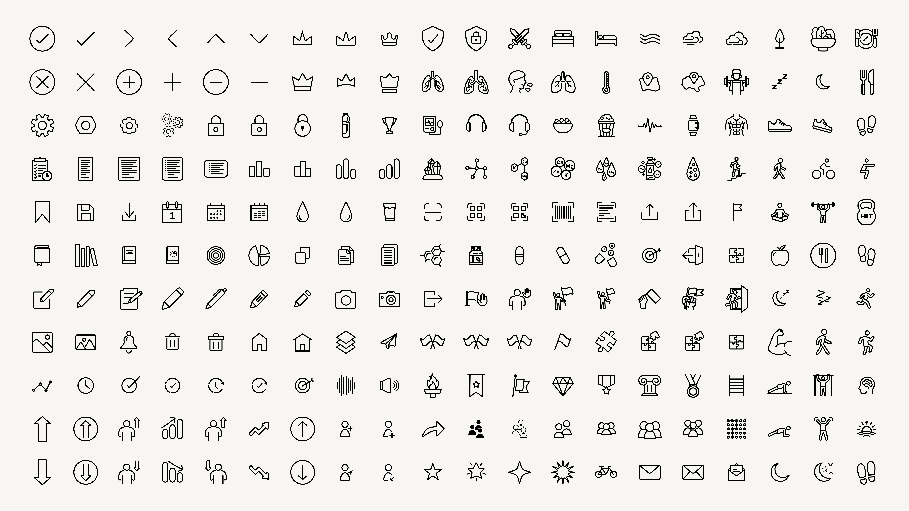
The work didn't stop at handoff
I didn't just hand off the designs and move on. I ran builds through TestFlight myself, found bugs, wrote them up, and worked with the developer until each one actually got fixed.
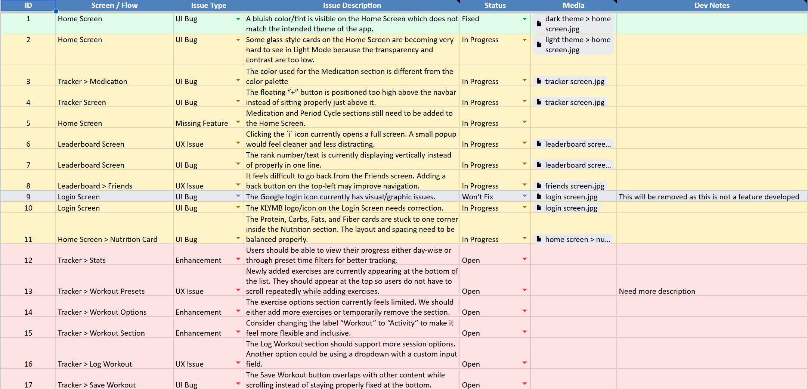
Designed to be shared
I designed these so a finished workout or a good day's numbers actually felt worth posting — and so KLYMB stayed recognisable wherever they ended up.
What KLYMB taught me
KLYMB wasn't your typical case study. Being on an early-stage team meant working right alongside the founders and tech lead to figure out real problems, like how to keep users coming back. I wore a lot of hats — jumping from core UX, to learning how to draw icons, to mocking up share cards.
That fast pace taught me that product design doesn't end in Figma. The work that actually mattered most — spotting issues early, keeping things organized as we grew, and sitting with engineering during the build — was rarely about just “designing screens.” And that's exactly the kind of designer I want to be.